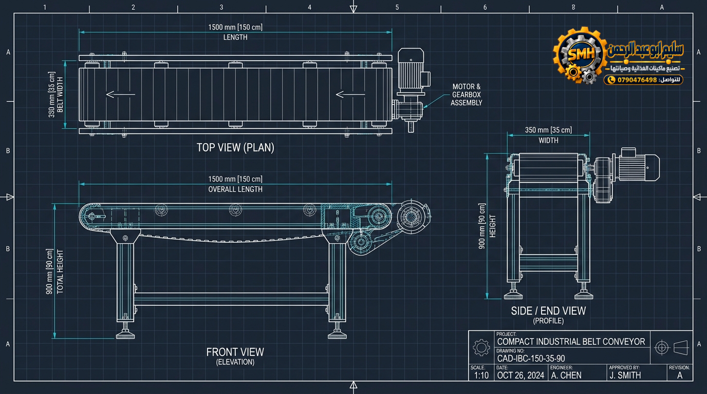
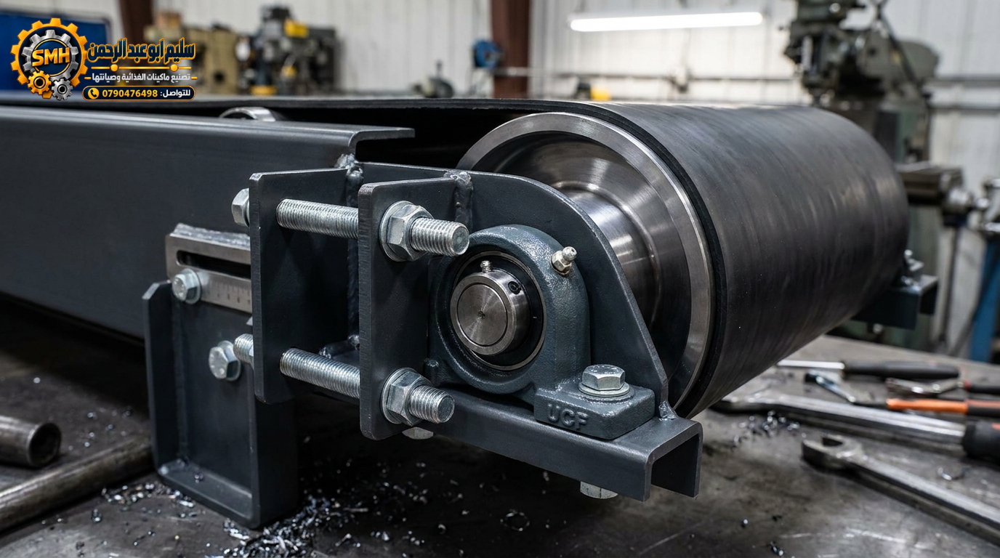
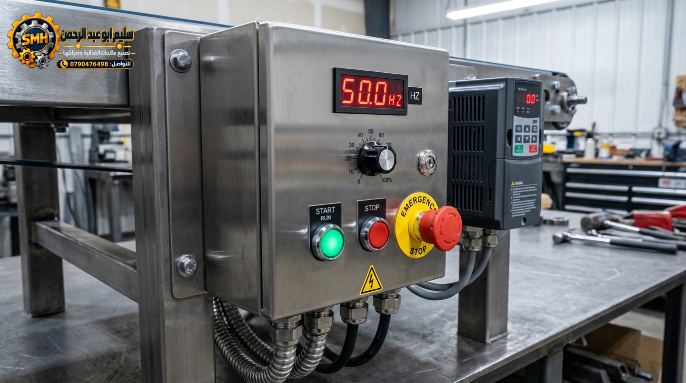
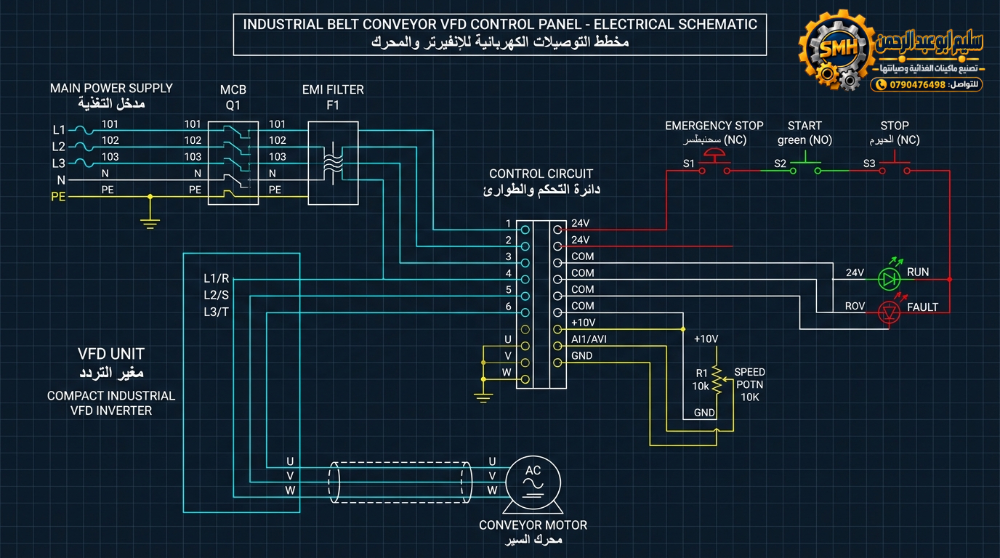

01 منظومة الدفع ومحرك العزم
DRIVE-UNITيتميز بوحدة تخفيض سرعة زاوية ملحقة مباشرة برأس البكرة، مما يلغي فقد الطاقة الناجم عن القواشيط الثانوية ويضمن عزم دوران ثابت حتى عند السرعات التشغيلية المنخفضة.
Heavy-Duty Compact Belt Conveyor System with Integrated VFD & Helical Reducer
![Ultra-realistic professional industrial engineering product photograph of a compact industrial belt conveyor machine inside an authentic metal fabrication workshop in Jordan. The conveyor is a real physical machine with exact realistic proportions: overall length 150 cm, belt width 35 cm, overall height 90 cm. Heavy-duty dark charcoal/black powder-coated rectangular steel frame with realistic welds, bolts, industrial bearings, and brackets. Continuous matte black industrial rubber belt flat top. Four sturdy steel support legs with horizontal reinforcement crossbars and adjustable rubber leveling feet. Mounted on the right side is a realistic industrial blue AC electric motor coupled to a mechanical cast-iron gearbox reducer driving the conveyor shaft, with authentic heavy-duty flexible conduit wiring. Next to it on the frame is a compact industrial metal VFD inverter control panel enclosure with start/stop push buttons, speed potentiometer dial, emergency stop mushroom button, and small digital LED display. Realistic workshop background with concrete floor, metal tools in soft focus. 3/4 perspective view showing full length, height, motor, gearbox, and control box. Clean industrial lighting, 8k resolution, photorealistic manufacturing photography, no CGI, no cartoon, true mechanical proportions.](الصور/5.png)
محرك وجيربوكس
عزم دوران فائق (جانب أيمن)
لوحة تحكم VFD
شاشة رقمية + زر طوارئ E-Stop
CAD Multiview Projection • ISO-Standard

Belt Tensioning & Tracking Assembly • UCF Bearings

براغي وصواميل قفل مجلفنة لضبط استقامة السير بدقة مليمترية ومنع الانحراف الجانبي للقشاط تحت الأحمال المتفاوتة.
رولمانات وبيل صناعية محكمة الإغلاق ومسبوكة من حديد الزهر، مزودة بنقطة تشحيم دوري (Grease Zerk Nipple) لعمر تشغيلي مديد وسلاسة فائقة.
درفيل صلب مخروط بهندسة محدبة طفيفة (Crowned Machined Pulley) تضمن التمركز التلقائي لمسار القشاط أثناء الدوران المستمر دون انزلاق.
مجاري انزلاق مصممة لتيسير فك وتغيير السير المطاطي بسرعة أثناء الصيانات الدورية دون الحاجة لقص الشاسيه أو فك المحرك الرئيسي.
VFD Inverter & Control Panel • Integrated Enclosure

لعرض التردد اللحظي بوحدة الهرتز (Hz) وسرعة الدوران الفعلية للقشاط، مع إمكانية عرض أكواد الأعطال التشخيصية والحمل الزائد (Overload).
قرص دوار متعدد الدرجات (0-100%) يتيح ضبط سرعة خط الإنتاج بدقة متناهية وسلاسة تامة تبدأ من الصفر وحتى أقصى سرعة تشغيلية.
زر تشغيل أخضر غاطس ومضيء (START / RUN) مع خاصية الإقلاع الناعم (Soft Start)، وزر إيقاف أحمر (STOP) لتفادي الصدمات الميكانيكية.
زر أمان صناعي بارز من نوع الفطر مع قفل أمان دوار (Twist-to-Release) وحلقة صفراء عاكسة، يقطع التغذية فورياً طبقاً لمعايير السلامة المهنية ISO 13850.
صندوق حماية معدني مقاوم للأتربة ورذاذ السوائل مع تمديدات كابلات كهربائية داخل مواسير حلزونية مصفحة (Flexible Armored Conduit) لضمان أقصى درجات الأمان في الورش.
VFD Wiring Schematic • IEC / IEEE Standards

قاطع حماية أوتوماتيكي MCB وفلتر التوافقيات والتداخل الكهرومغناطيسي (EMI Filter)، مع مداخل التغذية L1/L2/L3 وتوصيل خط التأريض الوقائي PE لضمان السلامة الكهربائية.
مخارج التردد المتغير U, V, W موصولة مباشرة بملفات المحرك الحثي ثلاثي الأطوار عبر كابل رباعي مصفح شيلد ومؤرض لحماية الإشارات من الضجيج والتشويش الترددي.
زر الطوارئ E-Stop بتلامس مغلق (NC) لقطع التغذية فوراً، أزرار التشغيل والإيقاف اللحظية، ومقاومة السرعة التناظرية (10kΩ Potentiometer) موصولة بمنافذ +10V و AI1 و GND.
مؤشر ليد مضيء لحالة التشغيل (RUN Status)، مع مخرج ريليه الحماية الذاتية (Fault Trip Relay) لإطلاق الإنذار وإيقاف التشغيل التلقائي عند الحمل الزائد أو هبوط الجهد.
Cable & Breaker Sizing Chart • IEC 60364 Standard
Preventive Maintenance & Lubrication Schedule • DIN 51502 / ISO 6743
الإجراء: حقن شحم ليثيوم بضغط خفيف عبر حلمة المشحمة (Grease Zerk Nipple) بمقدار 3-5 جرامات وتدوير السير يدوياً لتوزيع الشحم بانتظام.
الإجراء: فحص مستوى الزيت عبر نافذة الرؤية الزجاجية (Sight Glass) وتفقد مانعات التسرب، مع التبديل الأولي بعد أول 100 ساعة تشغيل (Break-in) ثم دورياً.
الإجراء: تنظيف أسطوانة الدرفيل من الرواسب، وفحص شد القشاط ومعايرة مسامير الشد الجانبية لضمان التمركز التلقائي ومنع انحراف المسار (Belt Alignment).
الإجراء: نفخ وتنظيف زعانف تبريد الإنفيرتر بضغط هواء جاف منخفض (Dry Air < 2 Bar)، وفحص إحكام ربط المسامير في روزيتة التوصيل (Terminal Torque Check).
يتميز بوحدة تخفيض سرعة زاوية ملحقة مباشرة برأس البكرة، مما يلغي فقد الطاقة الناجم عن القواشيط الثانوية ويضمن عزم دوران ثابت حتى عند السرعات التشغيلية المنخفضة.
تتيح للمشغل التحكم الدقيق في عدد اللفات بالدقيقة (RPM) مع خاصية البدء الناعم (Soft Start) والتوقف المفاجئ الآمن، مع حماية آلية للمحرك من انخفاض أو ارتفاع التيار الكهربائي.
مزود بمسامير سحب جانبية تسمح بضبط استقامة القشاط وسهولة استبداله أو صيانته دون الحاجة لتفكيك الشاسيه الرئيسي، مع توزيع متوازن للأوزان على النقاط الأربع.
Jordan Industrial Fabrication Workshop